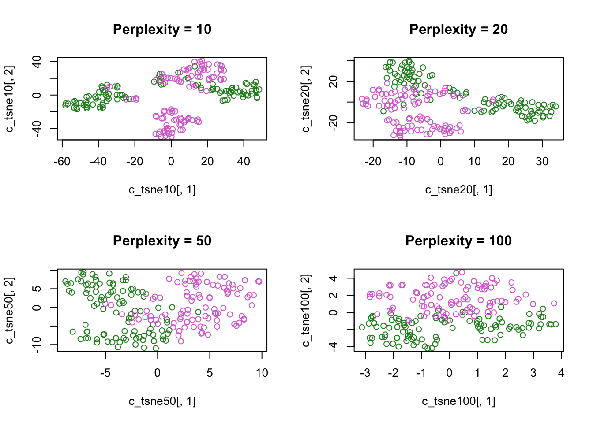
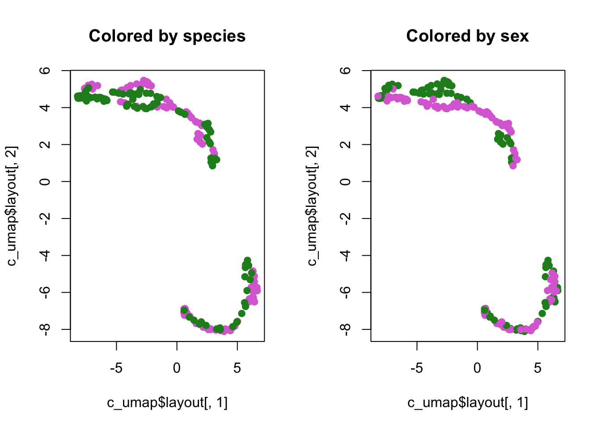

Module 2: Bonus Exercise Results
PCA
Plot PC projections (embeddings).

tSNE:
## sigma summary: Min. : 0.295392306171995 |1st Qu. : 0.424864940106807 |Median : 0.475900590252246 |Mean : 0.477263744443299 |3rd Qu. : 0.522810659014478 |Max. : 0.672971536327323 |## Epoch: Iteration #100 error is: 14.2124231098268## Epoch: Iteration #200 error is: 0.457433598064355## Epoch: Iteration #300 error is: 0.426901206662874## Epoch: Iteration #400 error is: 0.417058768775887## Epoch: Iteration #500 error is: 0.413644760686294## Epoch: Iteration #600 error is: 0.411668238988136## Epoch: Iteration #700 error is: 0.410266638869562## Epoch: Iteration #800 error is: 0.409199412402821## Epoch: Iteration #900 error is: 0.408423752277541## Epoch: Iteration #1000 error is: 0.407746199061357## sigma summary: Min. : 0.42069998064187 |1st Qu. : 0.505494820242659 |Median : 0.550282641638609 |Mean : 0.553782538032253 |3rd Qu. : 0.597446288884567 |Max. : 0.737568418500652 |## Epoch: Iteration #100 error is: 14.2639513174735## Epoch: Iteration #200 error is: 0.385250739942132## Epoch: Iteration #300 error is: 0.374074729689962## Epoch: Iteration #400 error is: 0.371558115096865## Epoch: Iteration #500 error is: 0.370735916996758## Epoch: Iteration #600 error is: 0.370306828756891## Epoch: Iteration #700 error is: 0.370053138937634## Epoch: Iteration #800 error is: 0.369870943340026## Epoch: Iteration #900 error is: 0.369738205694147## Epoch: Iteration #1000 error is: 0.36963533112203## sigma summary: Min. : 0.539839363698465 |1st Qu. : 0.634067694694373 |Median : 0.675230651916411 |Mean : 0.676426601512199 |3rd Qu. : 0.712708887622463 |Max. : 0.85041386579969 |## Epoch: Iteration #100 error is: 13.2290967072992## Epoch: Iteration #200 error is: 0.375529381550659## Epoch: Iteration #300 error is: 0.375405864268503## Epoch: Iteration #400 error is: 0.375396617122855## Epoch: Iteration #500 error is: 0.375396588284301## Epoch: Iteration #600 error is: 0.37539658690381## Epoch: Iteration #700 error is: 0.375396586851055## Epoch: Iteration #800 error is: 0.375396586849619## Epoch: Iteration #900 error is: 0.375396586849579## Epoch: Iteration #1000 error is: 0.375396586849577## sigma summary: Min. : 0.689338665294285 |1st Qu. : 0.801156853023062 |Median : 0.838030059692607 |Mean : 0.83585263946599 |3rd Qu. : 0.869043547272454 |Max. : 1.00462478171883 |## Epoch: Iteration #100 error is: 11.2141574447974## Epoch: Iteration #200 error is: 0.203098934603182## Epoch: Iteration #300 error is: 0.203078289807209## Epoch: Iteration #400 error is: 0.203078289807209## Epoch: Iteration #500 error is: 0.203078289807209## Epoch: Iteration #600 error is: 0.203078289807209## Epoch: Iteration #700 error is: 0.203078289807209## Epoch: Iteration #800 error is: 0.203078289807209## Epoch: Iteration #900 error is: 0.203078289807209## Epoch: Iteration #1000 error is: 0.203078289807209sex_cols = c(“orchid”,“forestgreen”)[factor(crabs$sex)]
Color-code tSNE plot by species, try various perplexity levels:
species_cols = c("orchid","forestgreen")[factor(crabs$sp)]
par(mfrow=c(2,2))
plot(c_tsne10[,1],
c_tsne10[,2],
main = "Perplexity = 10",
col = species_cols)
plot(c_tsne20[,1],
c_tsne20[,2],
main = "Perplexity = 20",
col = species_cols)
plot(c_tsne50[,1],
c_tsne50[,2],
main = "Perplexity = 50",
col = species_cols)
plot(c_tsne100[,1],
c_tsne100[,2],
main = "Perplexity = 100",
col = species_cols)Now do the same, but colour-code for sex:
sex_cols = c("orchid","forestgreen")[factor(crabs$sex)]
par(mfrow=c(2,2))
plot(c_tsne10[,1],
c_tsne10[,2],
main = "Perplexity = 10",
col = sex_cols)
plot(c_tsne20[,1],
c_tsne20[,2],
main = "Perplexity = 20",
col = sex_cols)
plot(c_tsne50[,1],
c_tsne50[,2],
main = "Perplexity = 50",
col = sex_cols)
plot(c_tsne100[,1],
c_tsne100[,2],
main = "Perplexity = 100",
col = sex_cols)
Run UMAP
## List of 4
## $ layout: num [1:200, 1:2] -0.1709 -0.0365 0.0239 0.4799 0.442 ...
## ..- attr(*, "dimnames")=List of 2
## .. ..$ : chr [1:200] "1" "2" "3" "4" ...
## .. ..$ : NULL
## $ data : num [1:200, 1:5] 8.1 8.8 9.2 9.6 9.8 10.8 11.1 11.6 11.8 11.8 ...
## ..- attr(*, "dimnames")=List of 2
## .. ..$ : chr [1:200] "1" "2" "3" "4" ...
## .. ..$ : chr [1:5] "FL" "RW" "CL" "CW" ...
## $ knn :List of 2
## ..$ indexes : int [1:200, 1:15] 1 2 3 4 5 6 7 8 9 10 ...
## .. ..- attr(*, "dimnames")=List of 2
## .. .. ..$ : chr [1:200] "1" "2" "3" "4" ...
## .. .. ..$ : NULL
## ..$ distances: num [1:200, 1:15] 0 0 0 0 0 0 0 0 0 0 ...
## .. ..- attr(*, "dimnames")=List of 2
## .. .. ..$ : chr [1:200] "1" "2" "3" "4" ...
## .. .. ..$ : NULL
## ..- attr(*, "class")= chr "umap.knn"
## $ config:List of 24
## ..$ n_neighbors : int 15
## ..$ n_components : int 2
## ..$ metric : chr "euclidean"
## ..$ n_epochs : int 200
## ..$ input : chr "data"
## ..$ init : chr "spectral"
## ..$ min_dist : num 0.1
## ..$ set_op_mix_ratio : num 1
## ..$ local_connectivity : num 1
## ..$ bandwidth : num 1
## ..$ alpha : num 1
## ..$ gamma : num 1
## ..$ negative_sample_rate: int 5
## ..$ a : num 1.58
## ..$ b : num 0.895
## ..$ spread : num 1
## ..$ random_state : int 916943332
## ..$ transform_state : int NA
## ..$ knn : logi NA
## ..$ knn_repeats : num 1
## ..$ verbose : logi FALSE
## ..$ umap_learn_args : logi NA
## ..$ method : chr "naive"
## ..$ metric.function :function (m, origin, targets)
## ..- attr(*, "class")= chr "umap.config"
## - attr(*, "class")= chr "umap"par(mfrow=c(1,2))
plot(c_umap$layout[,1],
c_umap$layout[,2],
col = species_cols, pch = 19,
main = "Colored by species")
plot(c_umap$layout[,1],
c_umap$layout[,2],
col = sex_cols, pch = 19,
main = "Colored by sex")